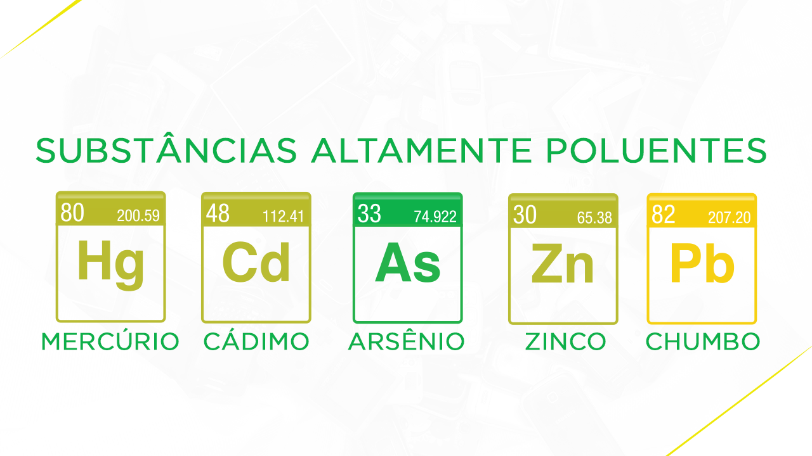

E-LIXO NÃO SE JOGA EM LIXO COMUM!
Os restos de equipamentos eletrônicos contêm mais de 20 tipos de componentes que podem ser extremamente prejudiciais à saúde e ao meio ambiente e podem resultar na contaminação do espaço e das pessoas que fazem a sua manipulação, como as pessoas que separam materiais para reciclagem.
Sem saber exatamente como descartar equipamentos e acessórios eletrônicos, muitos consumidores tendem a deixar esses itens armazenados em casa até o dia em que fazem o descarte no lixo comum ou doam para alguém que possa gerar algum lucro com os componentes que possam ser revendidos ou reutilizados.
O descarte desses produtos juntamente com o lixo comum pode gerar o vazamento das substâncias que mencionamos e contaminar o solo e os lençóis freáticos, os quais são responsáveis por boa parte da água que consumimos.
